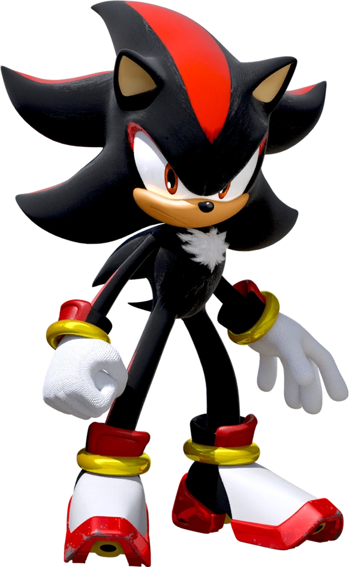
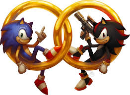

Шэдоу — чёрный антропоморфный ёж, созданный Sega как противоположность протагонисту серии ежу Сонику.
Идея создания персонажа пришла во время разработки Sonic Adventure 2.
По итогу нескольких обсуждений было решено сделать основной темой игры противостояние между добром и злом.
Специально для платформера разработчики создали двух новых персонажей для «тёмной» стороны:
ежа Шэдоу и летучую мышь Руж.
Характер ежа и его общая задумка принадлежали геймдизайнеру Такаси Иидзуке, в то время как за внешний вид
отвечал художник Юдзи Уэкава.
Помимо возможности передвигаться со сверхзвуковой скоростью, Шэдоу обладает приёмом chaos control,
благодаря которому он может перемещаться во времени и пространстве с помощью Изумруда Хаоса.

Вид: Ёж
Пол: Мужской
Возраст: Неизвестно (более 50 лет)
Место рождения: Космическая колония ARK
Создатель: Джеральд Роботник
Рост: 100 см
Вес: 35 кг
